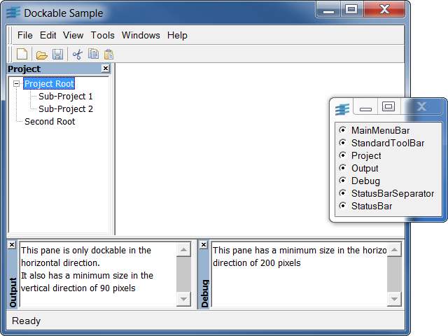
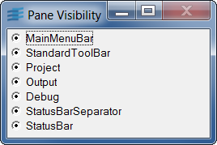

dockableThis sample shows how to create a basic application using the dockable windows. It also shows how to save and restore a docking configuration.
This sample implements the DockableApplication class, a possible base class for a standard dockable application. This class is declared in the dockapp.h file and defined in the dockapp.cpp file.
To illustrate the use of the DockableApplication class, a small application has been written in the dockable.h and dockable.cpp files. The application sets up a few panes, and displays them in the main window of the application. When leaving the application, the current docking configuration is saved, and will be used the next time the application will be launched.
A window whose title is "Pane Visibility" is also created to let the user change the visibility of each pane. Each toggle button handles the visibility of a pane of the application, as shown below:
In addition, you can save and restore docking configurations:
Note that these accelerators are only active when the "Pane Visibility" window has the keyboard focus.
IlvPaneIlvDockableIlvDockableContainerIlvDockableMainWindowIlvDockingPaneLocationIlvDockingConfigurationIlvDockingConfigurationHandlerIlvToggle